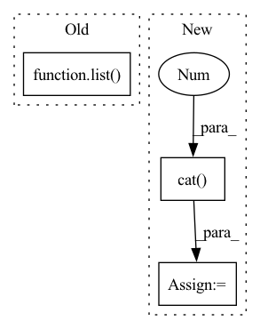

Pattern ID :10204

Before Change
if self.neg_sample_args["strategy"] == "by":
pos_len_list = self.uid2items_num[uid_list]
user_len_list = pos_len_list * self.times
cur_data.set_additional_info(list(pos_len_list), list(user_len_list))
self.pr += self.step
return cur_data
After Change
data_list.append(self._neg_sampling(self.dataset[index]))
idx_list += [idx for i in range(self.uid2items_num[uid] * self.times)]
positive_u += [idx for i in range(self.uid2items_num[uid])]
positive_i = torch.cat((positive_i, self.dataset[index][self.iid_field]), 0)
cur_data = cat_interactions(data_list)
idx_list = torch.from_numpy(np.array(idx_list))
positive_u = torch.from_numpy(np.array(positive_u))
In pattern: SUPERPATTERN
Frequency: 3
Non-data size: 3
Instances
Fragment ID: 36003085
Project Name: rucaibox/recbole
Commit Name: a3596a230c1b34f77b50d21460d63996206cd55a
Time: 2021-07-15
Author: 2017202006@ruc.edu.cn
File Name: recbole/data/dataloader/general_dataloader.py
M Class Name: NegSampleEvalDataLoader
N Class Name: NegSampleEvalDataLoader
M Method Name: _next_batch_data(1)
N Method Name: _next_batch_data(1)
M Parent Class: NegSampleDataLoader
N Parent Class: NegSampleDataLoader
M File Name: recbole/data/dataloader/general_dataloader.py
N File Name: recbole/data/dataloader/general_dataloader.py
M Start Line: 121
M End Line: 132
N Start Line: 121
N End Line: 140
'>
Before Change
torch.nn.init.orthogonal_(self.weight)
def forward(self, inp):
size = list(inp.size())
size[1] = self.out_features
data = self.unfold(inp)
data = self.weight.unsqueeze(0).expand(size[0], -1, -1).bmm(data)
data = data.view(*size)
After Change
def forward(self, inp):
batch, feat, width, height = inp.size()
output = torch.cat([torch.zeros((batch, 1), device=inp.device, dtype=inp.dtype), inp.view(batch, -1)], 1)
output = output.gather(1, self.kernel.expand(batch, -1))
data = output.view(batch, feat * 9, width * height)
data = self.weight.unsqueeze(0).expand(batch, -1, -1).bmm(data)
data = data.view(batch, self.weight.size(0), width, height)
return data
'>
Fragment ID: 36003084
Project Name: clashluke/perftorch
Commit Name: 5c6b4d3d242e097e6f09800a68bfbe2275d9b16f
Time: 2020-09-05
Author: 39779310+ClashLuke@users.noreply.github.com
File Name: dilatedconv.py
M Class Name: DilatedConv
N Class Name: DilatedConv
M Method Name: forward(2)
N Method Name: forward(2)
M Parent Class: torch.jit.ScriptModule
N Parent Class: torch.jit.ScriptModule
M File Name: dilatedconv.py
N File Name: dilatedconv.py
M Start Line: 54
M End Line: 58
N Start Line: 41
N End Line: 46
'>
Before Change
def compute(self):
precision, recall, f1, mean_precision, mean_recall, mean_ap, mf1 = 0., 0., 0., 0., 0., 0., 0.
metrics = getattr(self, "metrics")
metrics = [np.concatenate(x, 0) for x in list(zip(*metrics))]
if len(metrics):
precision, recall, average_precision, f1, ap_class = ap_per_class(*metrics)
if self.iou_thres.is_range():
After Change
accumulated_matching_info = getattr(self, "matching_info")
if len(accumulated_matching_info):
matching_info_tensors = [torch.cat(x, 0) for x in list(zip(*accumulated_matching_info))]
// shape (n_class, nb_iou_thresh)
ap, precision, recall, f1, unique_classes = compute_detection_metrics(
'>
Fragment ID: 36003083
Project Name: deci-ai/super-gradients
Commit Name: 90fb0a6d0e7aa883b1f583c9c83b4c2d3525e9d2
Time: 2022-07-28
Author: 80472096+shaydeci@users.noreply.github.com
File Name: src/super_gradients/training/metrics/detection_metrics.py
M Class Name: DetectionMetrics
N Class Name: DetectionMetrics
M Method Name: compute(1)
N Method Name: compute(1)
M Parent Class: Metric
N Parent Class: Metric
M File Name: src/super_gradients/training/metrics/detection_metrics.py
N File Name: src/super_gradients/training/metrics/detection_metrics.py
M Start Line: 154
M End Line: 165
N Start Line: 99
N End Line: 116